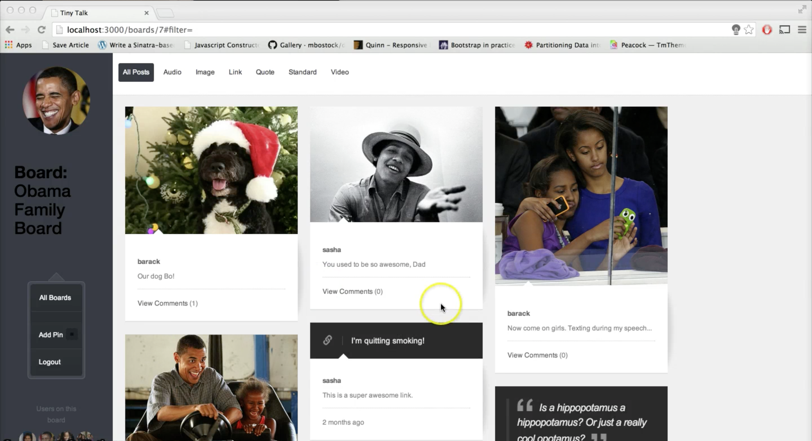

Motion Music - an instrument that you play by moving. It uses your webcam to track motion and make music.
All The Lonely People - Listen to loneliness live via Twitter. Every time someone tweets the phrase "so lonely", a computerized voice reads the tweet out loud.
Wreck This Song - Manipulate the speed of Miley Cyrus' "Wrecking Ball" by moving your head towards and away from the screen. Only works in Chrome and Firefox for now.
Tiny Talk - A tiny social network for families to share photos, links, articles, videos, and more. EXAMPLE ACCOUNT: login with Email: colt123@gmail.com and password: coltcolt.

Reading Room - Allows you to bookmark and save articles. It extracts text and images only and displays them in a readable format. Each day it picks a new article from your library for you to read.